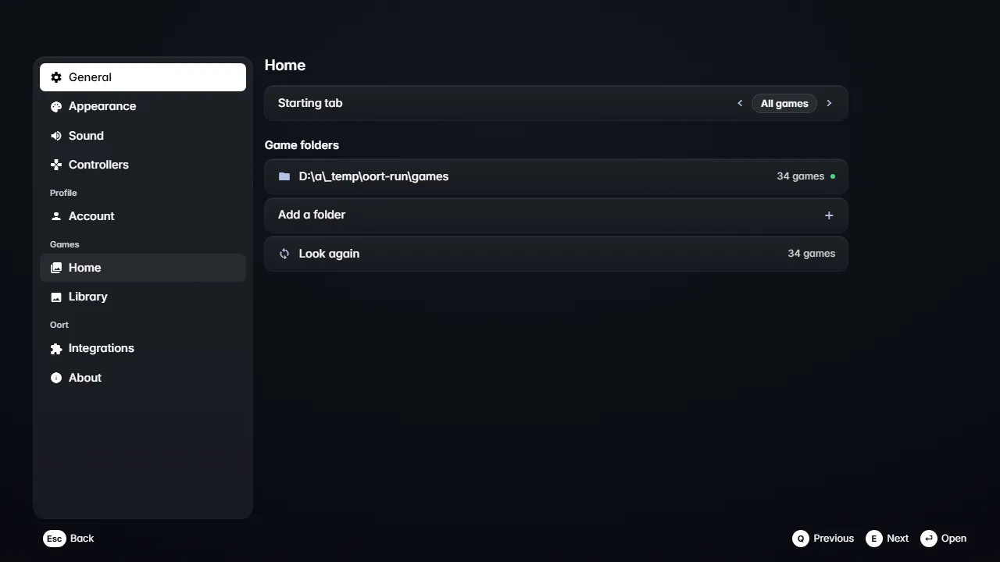
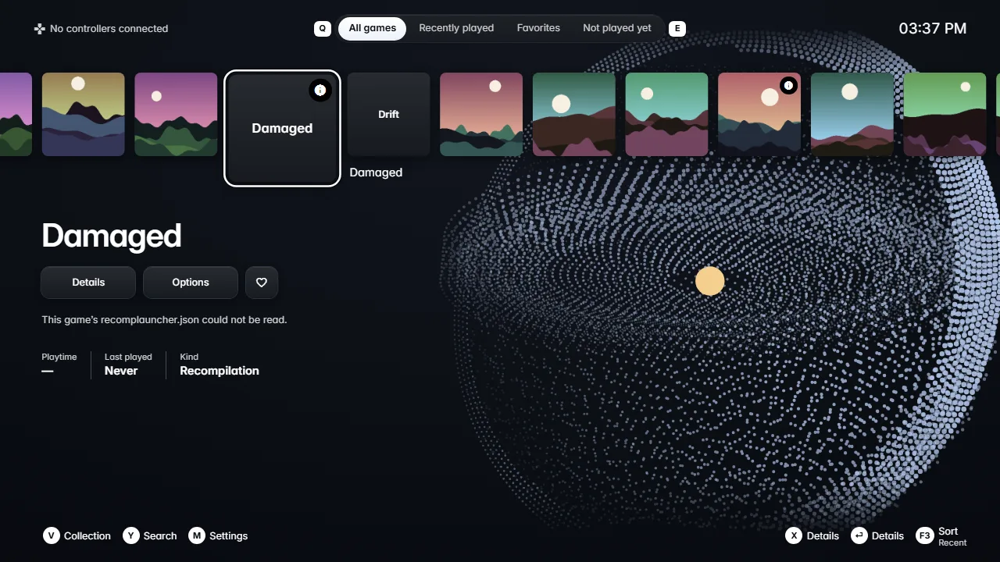
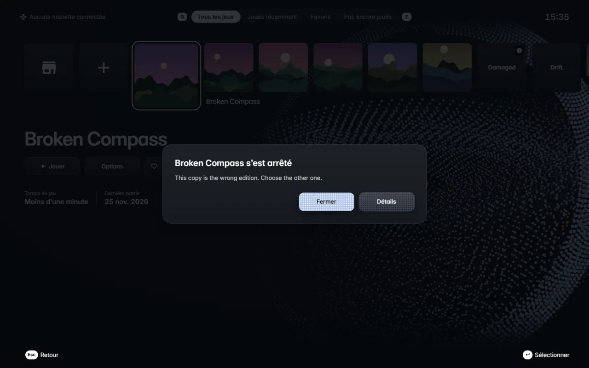
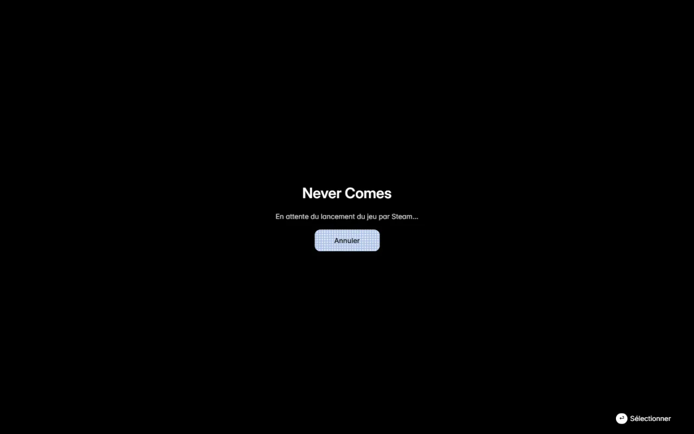
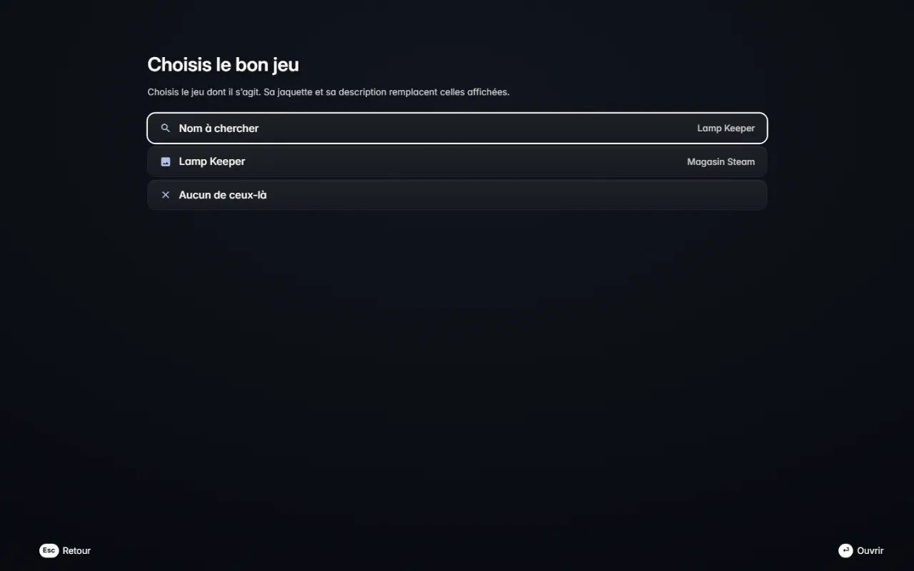
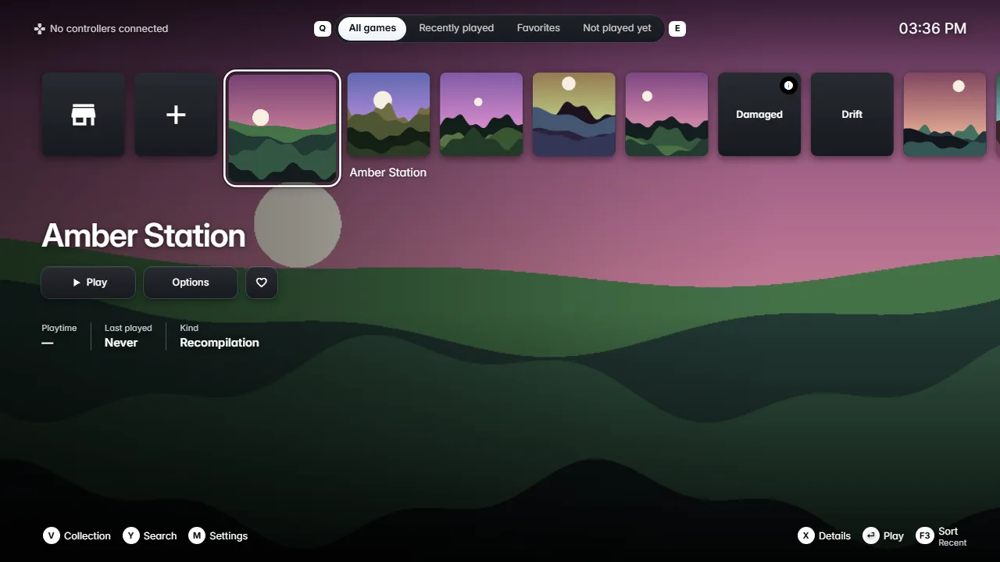
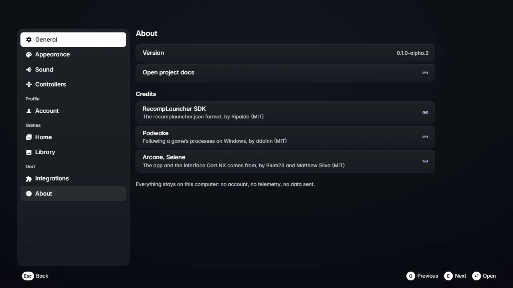

Troubleshooting
- 1
A game is missing
Control center › Library › Library refresh. For a recompilation, check that its folder holds
recomplauncher.json.Checked with invented games : Where this comes from

- 2
The game is marked unreadable
Its
recomplauncher.jsonis damaged or asks for a newer launcher. Take it again from the project.Checked with invented games : Where this comes from

- 3
The game stops
Oort shows the message the game left. Then check that the game starts on its own, outside Oort.
Checked with invented games : Where this comes from

- 4
Steam does not answer
“Not found”: open Steam once, then Settings › Home › Look again. If it keeps waiting, look at Steam’s window: it is probably asking something.
Checked with invented games : Where this comes from

- 5
Wrong cover, or none
Options › Pictures and information: choose the right game, change the name, or take a picture of yours. Without information online, a program only has its icon.
Checked with invented games : Where this comes from

- 6
The controller is not seen
Press a button with the Oort window in front, then unplug it and plug it in again. Not tried with a real controller.
Read in the code, not tried : Where this comes from

- 7
Tell us
Open a report: what you were doing, what you saw, your version. Attach no game, key or save.
Read in the code, not tried : Where this comes from



What has been tried
Alpha.3 was tried with invented games on a GitHub machine. The remaining screenshots are from alpha.2.